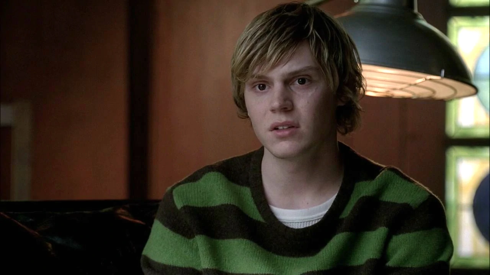

Тейт родился 15 мая 1977 года в семье Хьюго и Констанс Лэнгдонов. В отличие от брата и сестры, Аделаииды и Бо, у него не было физических или умственных недостатков. После исчезновения Хьюго Констанс начала пить, и Тейт был предоставлен сам себе. В 1984 году в подвале на мальчика нападает Инфантана, но его спасает призрак Норы Монтгомери, с которой у Тейта складываются тёплые отношения: одинокая и несчастная Нора заменяет Тейту мать, в то время как Констанс не уделяет сыну должного внимания. В 1994 году после ссоры с матерью во время семейного ужина Тейт наутро нанюхался наркотиков и поджег любовника Констанс, Лари Харви, а после этого совершил массовое убийство в своей школе, забрав жизни у пятнадцати молодых парней и девушек. После стрельбы Тейт вернулся домой, куда вскоре приехала команда спецназа, чтобы задержать его. Тейт схватил пистолет чтобы его убили, иначе его могли посадить в тюрьму, а сейчас он стал призраком
Как и все остальные умершие в доме-убийцы, Тейт превратился в призрака и стал жить в доме. Тейт согласился помочь Норе отобрать у кого-нибудь из жильцов ребенка. Когда в доме поселились Чед Варвик и Патрик, Тейт хотел забрать ребенка у них, но те поссорились и передумали заводить детей. Тейт убил их и сказал Норе, что нужно ждать новых жильцов.
